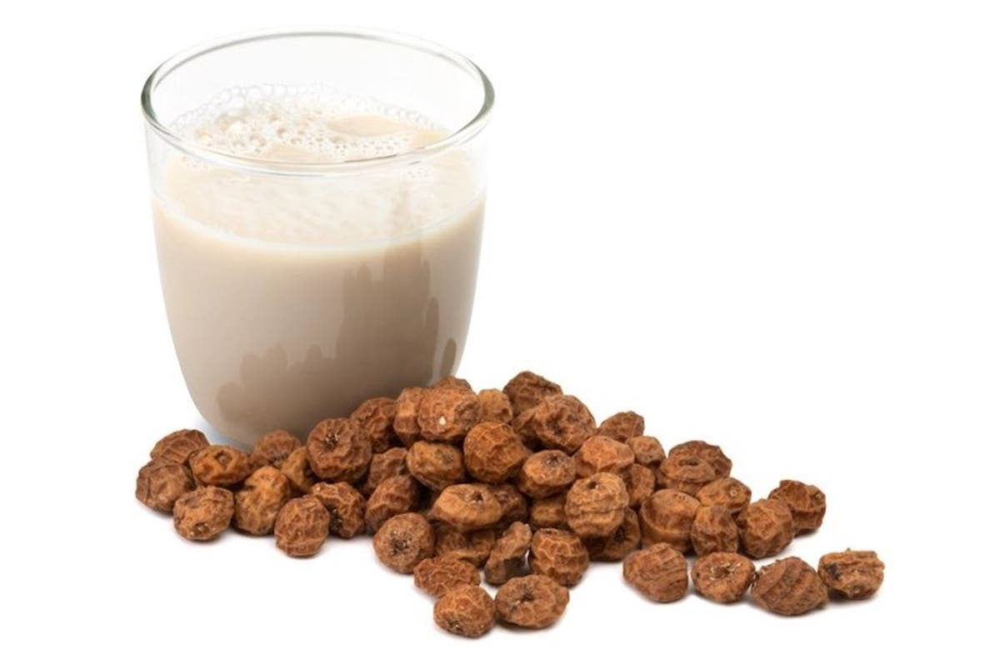
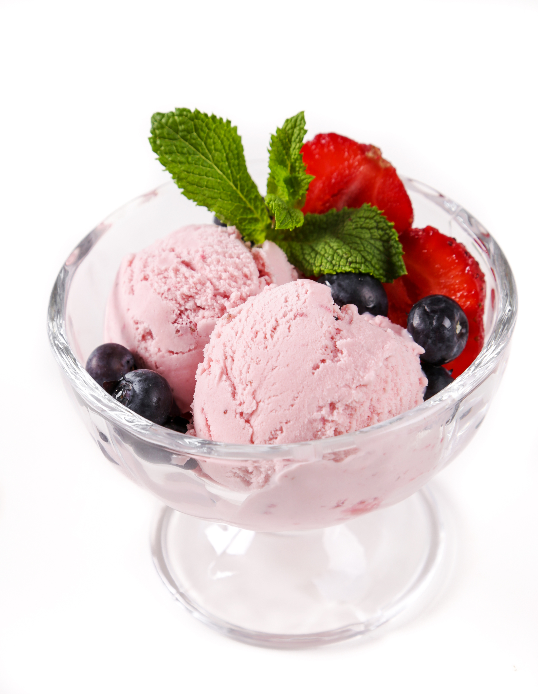

Helados y Sorbetes artesanos
Elaboramos nuestros helados y sorbetes de manera
totalmente artesanal en nuestro obrador del centro
de Madrid, mediante un cuidadoso proceso de elaboración
manual que huye de la adición forzada de aire de los
helados industriales para servir un helado de calidad
producido en el día y con un sabor único

Auténtica horchata fresca elaborada en Valencia
Elaborada 100% con agua, azúcar y Chufa de Valencia con
sello Denominación de Origen, nuestra horchata
viaja cada mañana desde Valencia, donde se elabora según su
receta tradicional en las condiciones óptimas de humedad para
poder servirse sin renunciar a su sabor genuino.
